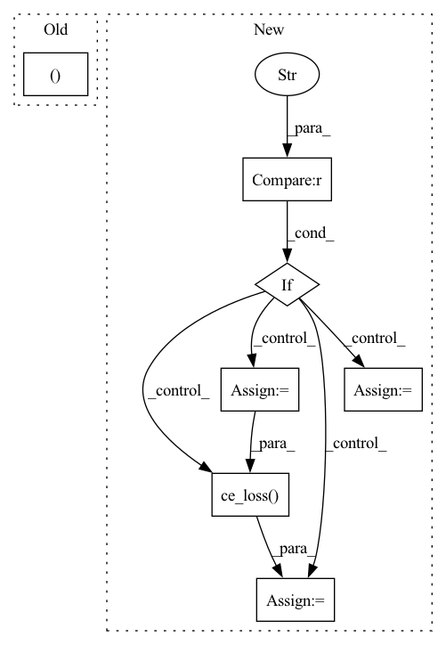

Pattern ID :19562

Before Change
def calculate_loss(self, interaction):
target_id = interaction[self.TARGET_ITEM_ID]
pred, _ = self.forward(interaction)
logits = torch.matmul(pred, self.get_item_lookup_table())
loss = self.criterion(logits, target_id)
return loss
After Change
def calculate_loss(self, interaction):
seq_output = self.forward(interaction)
pos_items = interaction[self.TARGET_ITEM_ID]
if self.loss_type == "BPR":
neg_items = interaction[self.NEG_ITEM_ID]
pos_items_emb = self.item_embedding(pos_items) // [B H]
neg_items_emb = self.item_embedding(neg_items) // [B H]
pos_score = torch.sum(seq_output*pos_items_emb, dim=-1) // [B]
neg_score = torch.sum(seq_output*neg_items_emb, dim=-1) // [B]
loss = self.bpr_loss(pos_score, neg_score)
return loss
elif self.loss_type == "CE":
test_item_emb = self.item_embedding.weight
logits = torch.matmul(seq_output, test_item_emb.transpose(0, 1))
loss = self.ce_loss(logits, pos_items)
return loss
else:
raise NotImplementedError
In pattern: SUPERPATTERN
Frequency: 3
Non-data size: 7
Instances
Fragment ID: 63939624
Project Name: rucaibox/recbole
Commit Name: ffcc134b950b0452fc3002c303ddab36e6f9738c
Time: 2020-10-08
Author: 838803621@qq.com
File Name: recbox/model/sequential_recommender/sasrec.py
M Class Name: SASRec
N Class Name: SASRec
M Method Name: calculate_loss(2)
N Method Name: calculate_loss(2)
M Parent Class: SequentialRecommender
N Parent Class: SequentialRecommender
M File Name: recbox/model/sequential_recommender/sasrec.py
N File Name: recbox/model/sequential_recommender/sasrec.py
M Start Line: 116
M End Line: 120
N Start Line: 118
N End Line: 137
'>
Before Change
def training_step(self, batch, batch_idx):
x = batch["video"]
valence, arousal = batch["label_valence"], batch["label_arousal"]
y_hat = self.forward(x)
valence_hat, arousal_hat = y_hat[..., 0], y_hat[..., 1]
loss_v = self.ccc_loss(valence_hat, valence)
loss_a = self.ccc_loss(arousal_hat, arousal)
After Change
arousal = batch["label_arousal"]
y_hat = self.forward(x)
if self.params.valence_loss == "softmax":
valence_hat, arousal_hat = y_hat[..., :8], y_hat[..., -1]
valence = batch["class_valence"]
loss_v = self.ce_loss(valence_hat, valence)
elif self.params.valence_loss == "ccc":
valence_hat, arousal_hat = y_hat[..., 0], y_hat[..., 1]
valence = batch["label_valence"]
loss_v = self.ccc_loss(valence_hat, valence)
loss_a = self.ccc_loss(arousal_hat, arousal)
loss = 0.5 * loss_v + 0.5 * loss_a
'>
Fragment ID: 63939612
Project Name: sailordiary/m3f.pytorch
Commit Name: f690b369b13a801658c3c0f45422343fa79437b0
Time: 2020-01-31
Author: me@sailorzhang.com
File Name: models/model.py
M Class Name: AffWild2VA
N Class Name: AffWild2VA
M Method Name: training_step(3)
N Method Name: training_step(3)
M Parent Class: pl.LightningModule
N Parent Class: pl.LightningModule
M File Name: models/model.py
N File Name: models/model.py
M Start Line: 71
M End Line: 74
N Start Line: 75
N End Line: 86
'>
Before Change
def calculate_loss(self, interaction):
target_id = interaction[self.TARGET_ITEM_ID]
pred, _ = self.forward(interaction)
logits = torch.matmul(pred, self.get_item_lookup_table())
loss = self.criterion(logits, target_id)
return loss
After Change
def calculate_loss(self, interaction):
seq_output = self.forward(interaction)
pos_items = interaction[self.TARGET_ITEM_ID]
if self.loss_type == "BPR":
neg_items = interaction[self.NEG_ITEM_ID]
pos_items_emb = self.item_embedding(pos_items) // [B H]
neg_items_emb = self.item_embedding(neg_items) // [B H]
pos_score = torch.sum(seq_output*pos_items_emb, dim=-1) // [B]
neg_score = torch.sum(seq_output*neg_items_emb, dim=-1) // [B]
loss = self.bpr_loss(pos_score, neg_score)
return loss
elif self.loss_type == "CE":
test_item_emb = self.item_embedding.weight
logits = torch.matmul(seq_output, test_item_emb.transpose(0, 1))
loss = self.ce_loss(logits, pos_items)
return loss
else:
raise NotImplementedError
'>
Fragment ID: 63939618
Project Name: rucaibox/recbole
Commit Name: bcb4d69235f1460db426402cc76af1ec1db8e898
Time: 2020-10-07
Author: 838803621@qq.com
File Name: recbox/model/sequential_recommender/sasrec.py
M Class Name: SASRec
N Class Name: SASRec
M Method Name: calculate_loss(2)
N Method Name: calculate_loss(2)
M Parent Class: SequentialRecommender
N Parent Class: SequentialRecommender
M File Name: recbox/model/sequential_recommender/sasrec.py
N File Name: recbox/model/sequential_recommender/sasrec.py
M Start Line: 116
M End Line: 120
N Start Line: 118
N End Line: 137